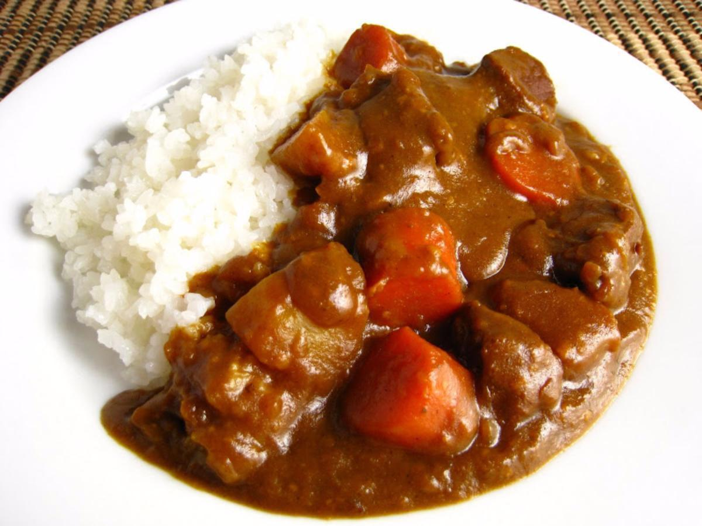

Japanese Beef Curry
Home

What is Japanese beef curry?
Widely regarded as a national dish, Japanese beef curry
is one of the most delicious and flavorful curries hailing from any country.
The sauce is sweet and savory while the meat and vegetables are usually tender
gliding through your mouth when cooked to perfection. The flavor profile is simple
yet robust bringing and amalgamation of flavor.
Japanese curry is usually made with beef, potatoes, carrots, a mixture of different curry blocks,
and a secret ingredient to pull out an extra kick of flavor.
If you've never made curry before don't worry. Its not a super complicated dish to make.
You don't have to be Gordon Ramsay in order to make a great dish, and don't worry,
no one is going to call you a donut for not knowing how to mince an onion properly. Cooking
should be fun and to your skill level. Japanese curry is a beginner friendly dish!
Ingredients and Equipment:
- Golden Curry Beef Curry Blocks
- 3 Carrots
- 2 Onions
- 2 Potatoes
- 1 Fuji Apple (or apple of choice)
- 1 lb. of Stewing Beef (don't forget this unless you're vegan)
- 2 tbsp. on Olive Oil
- About 4 cups of water (read curry block box)
- 1 Kitchen cutting knife
- 1 Wok
- 1 boiling pot
Steps:
- Fill boiling pot with required amount of water and begin to boil.
- Cut onions into small chunks and begin sauteing in the wok with
2 tbsp. of olive oil.
- While the onions are sauteing, cut down the carrots and potatoes
into desired size.
- Add vegetables to wok and cook until onions are browning.
- Once the vegetables are cooked add them to the boiling pot,
let simmer.
- While the vegetables are simmering, throw the beef into the wok,
begin to brown the beef.
- Once the beef is browned add the beef to the boiling pot of vegetables.
- Let the pot simmer on low heat for about 30 minutes.
- Once 30 minutes is up then add the curry blocks to the mixture.
- Stir occasionally but let simmer for about 10 minutes.
- While the curry is simmering finely shred your apple of choice
and add it to the pot.
- Eat!